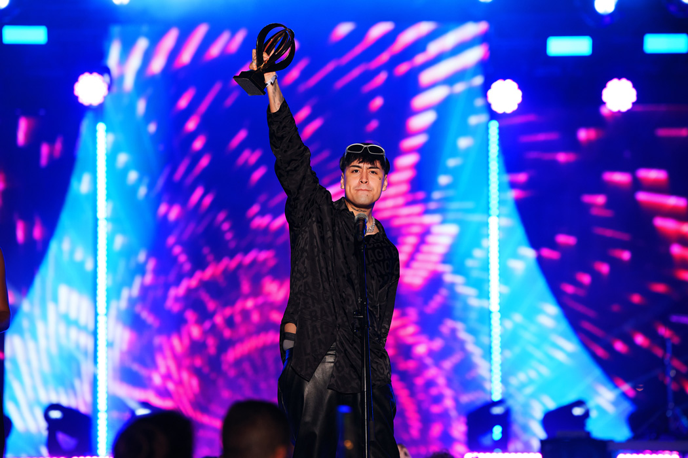
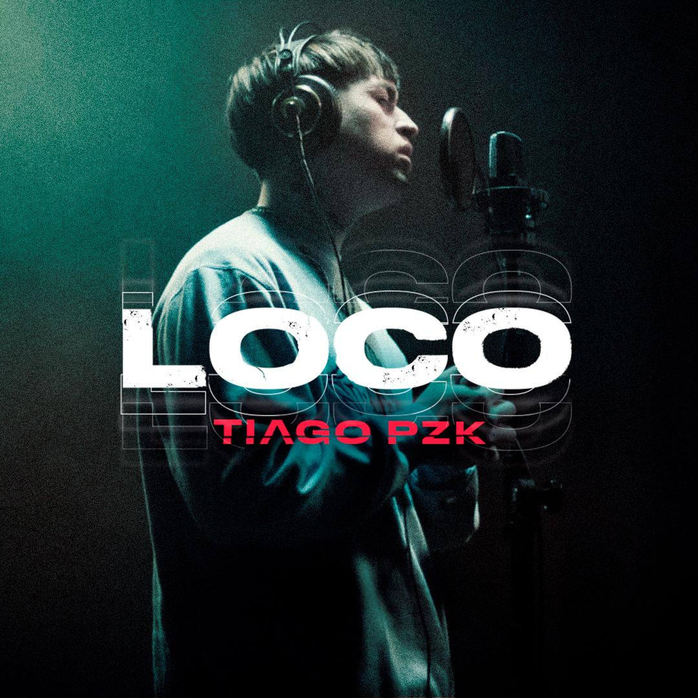

Portales Tour 2022
Ver fechasMusic
Tour
Ver fechasNews

Tiago PZK se presentó en los Premios Heat
El cantante argentino se presentó en los Premios Heat con su “BZRP Music Session #48.
9 de Junio, 2022.

Tiago PZK presenta “Loco”, una canción exclusiva para la película “Cato”
“LOCO” posiblemente sea una de las canciones con más carga emocional de este último tiempo.
14 de Septiembre, 2021.
Tiago PZK cuenta con su documental en Spotify: “La Plaza Me Llama”
Recientemente presentó “Entre Nosotros”, su primera colaboración en dúo con Lit Killah.
11 de Julio, 2021.